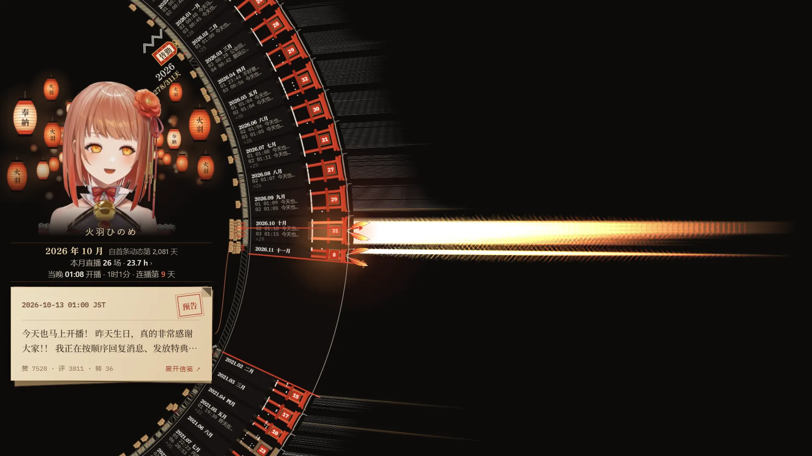
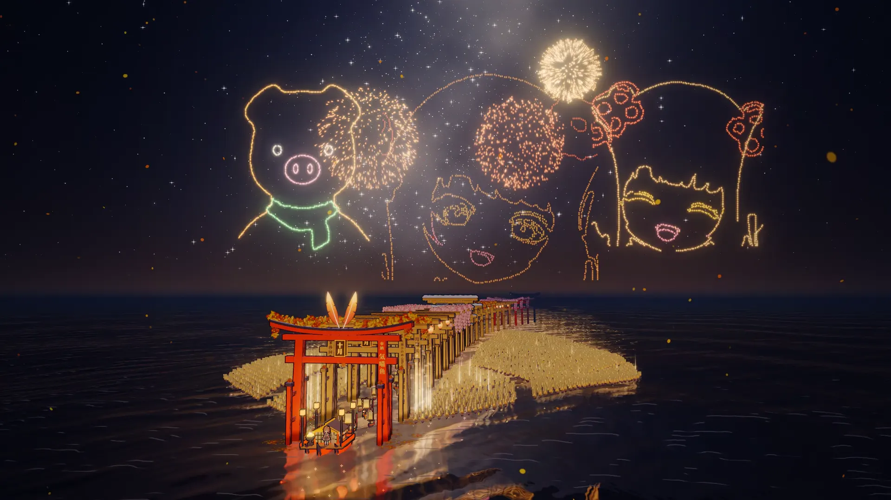
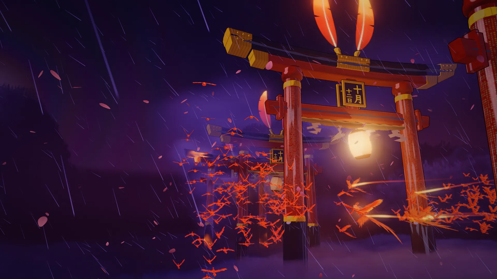

灯下千本鸟居
HANE LANTERN · 第一部
她在 B 站发的每一条动态，一个月一座鸟居，围成一座会转的神社。动态、直播、统计和全文归档都在这里。
千本鸟居三部曲



她在 B 站发的每一条动态、大航海名单上的每一个人、她播过的每一个夜晚，各自排成了一条千本鸟居。
三部作品 · 选一座鸟居进入
HANE LANTERN · 第一部
她在 B 站发的每一条动态，一个月一座鸟居，围成一座会转的神社。动态、直播、统计和全文归档都在这里。
HANE VOYAGE · 第二部
大航海名单上的每一个人是一艘船，跟着她的船从 2021 年航行到今天。陪伴满一年的名字，刻在海中的鸟居上。
HANE FLIGHT · 第三部
她播过的每一夜是云中的一座鸟居，门柱上写着那一夜弹幕里的话。舰长化作小鸟，跟着她飞到今天。